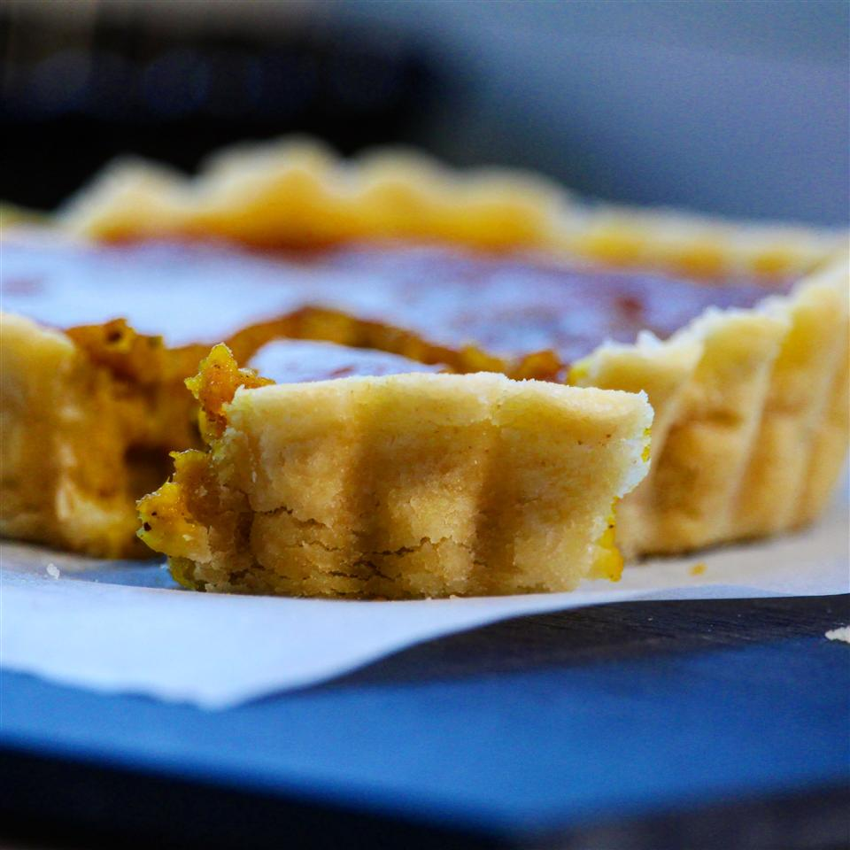

Gluten Free Pie Crust

Great tasting gluten-free pie crust recipe. Works well every time.
A gluten-free pie crust using common ingredients. I've adjusted the method
over time and have found this final recipe to work every time. It is perfect
for both sweet and savory dishes. The trick is leaving large chunks of
butter, whole, so they create a flaky crust. The baked crust holds its shape
quite well and delivers a nice slice of filled pie beautifully without
falling apart.
Ingredients:
- 2 ½ cups gluten-free flour blend
- 2 tablespoons brown rice flour
- 1 cup cold butter, cut into 1/2-inch cubes
- ¼ cup ice cold water
- 2 cold eggs
- ½ teaspoon apple cider vinegar
Steps:
- Place brown rice flour in a resealable plastic bag. Add butter to the bag one cube at a time, shaking to coat each cube evenly with flour. Seal bag and place in the freezer for 15 minutes.
- Whisk eggs and vinegar together in a small bowl. Place in the refrigerator.
- Pour gluten-free flour into a large bowl. Cut in butter with your fingers until mixture resembles pebbles with some large lumps of butter remaining. Stir in egg and vinegar mixture. Mix in water one tablespoon at a time until dough is no longer sticky and forms a ball.
- Wrap dough in plastic wrap; refrigerate until firm, about 30 minutes.
- Divide dough into 2 pieces and roll out to desired thickness on a lightly floured work surface.
Go back